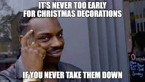
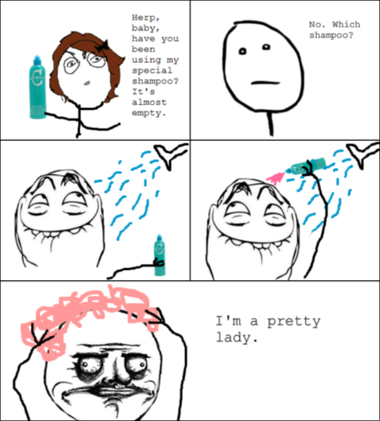

Hi and welcome to the memeverse the interdimensional library filled with memes. From Quandale Dingle to John Cena. Here you will find out all about these memes, were they came from, and of course how they rank in the memeverse.
Memes are funny videos or pictures made to make people laugh. The first internet memes were made in the early 2000's but have evolved since then.
The first memes were made by inserting a picture from a movie, show, or a random funny face with a punchline. Example below.
These early memes sparked the first generation of memes. Other memes also existed during these times called ragecomics. They were drawings of pre made characters called derp, derpina, herp, herpina, and derpy derp. example below.
These were the anceint internet memes not that known to the new generations of today but still revolutionary on how memes developed. They still rule how memes form and are. They were the start of a new era of humor in human history. They allowed people to embrace the internet and post funny and relatable memes. These are basically the gods of memes and are cherished by all who were alive to witness them. These memes will be forever missed and loved.
The max points a meme can score is 52
Here are some memes that you may or may not know come and explore
Quandale Dingle Ohio Final boss Gigachad